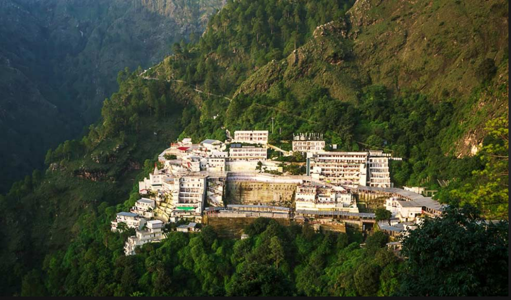
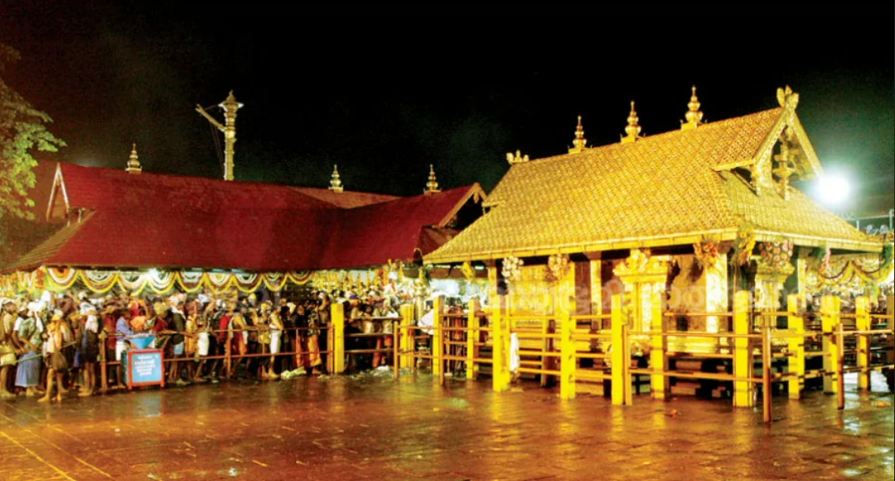
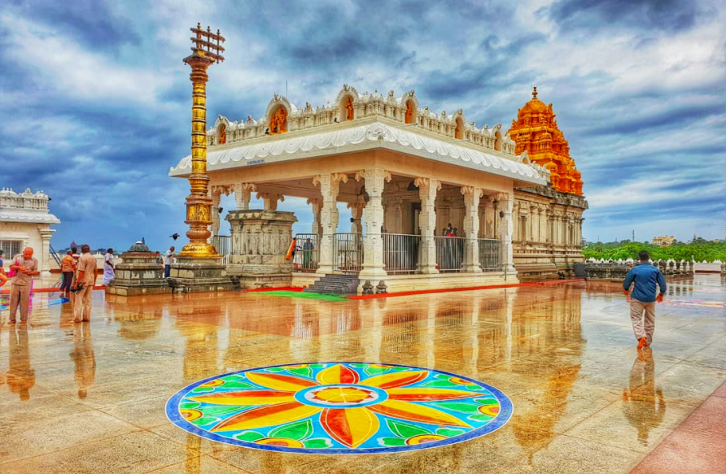
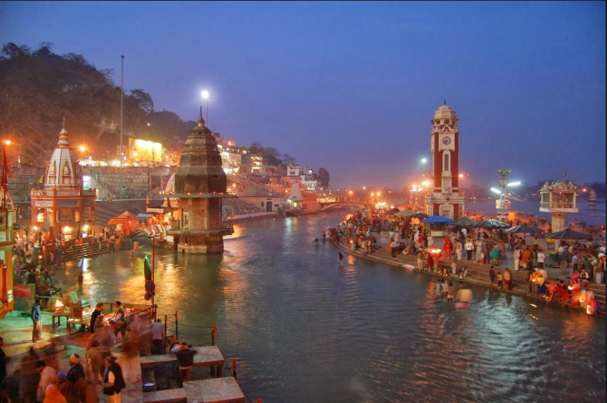
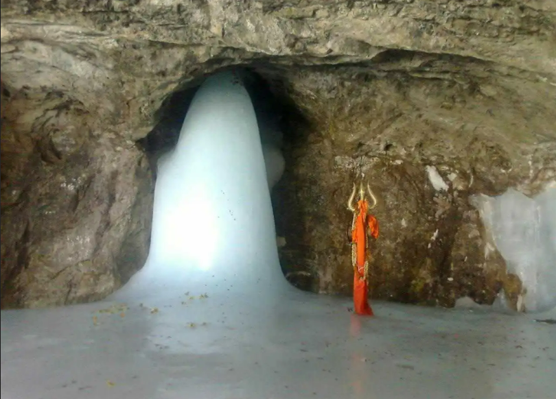
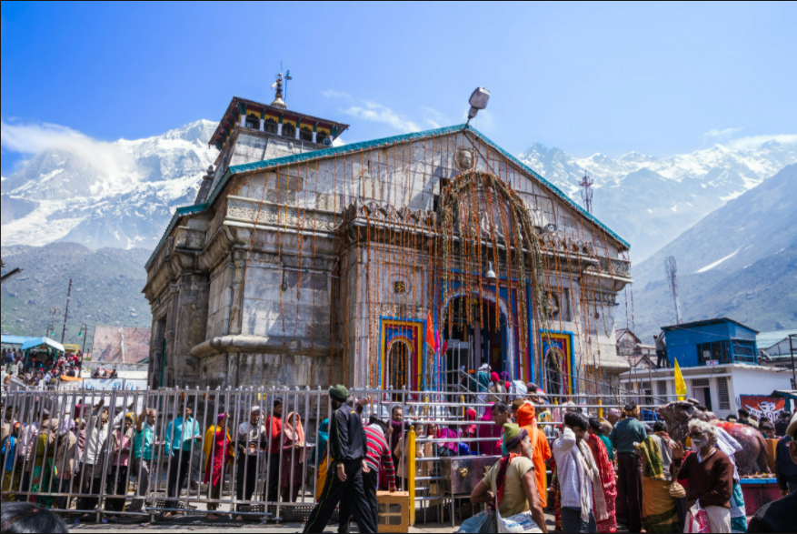
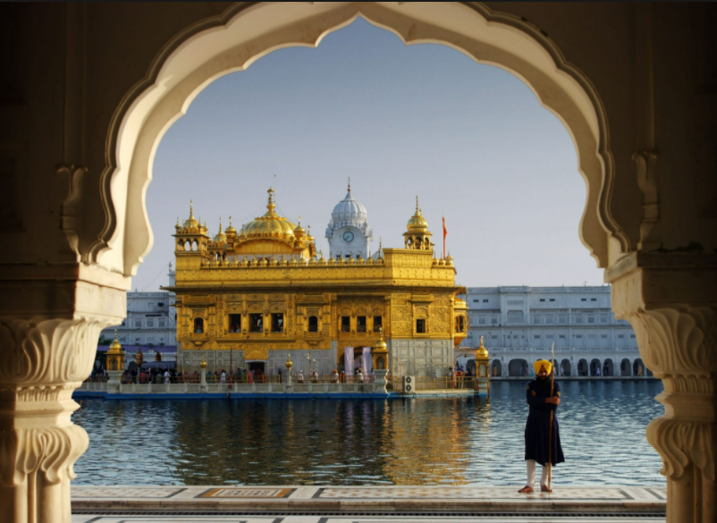

Here is a list of some Religious Places in India For Divine Blessings
1.Vaishno Devi,Jammu & Kashmir-The Holy Caves
Known for:Vaishno Devi Mandir .Katra .Ardhkuwari
Located in Trikuta hills, 13 km from Katra at the height of 1560 m above sea level with bright clouds and thinning air, this town is the holy cave temple of Mata Vaishnodevi, with spirituality and vibrancy lingering in the atmosphere. It is considered one of the most sacred holy places in India.
Best Time:
Throught the Year9 Vaishno Devi Attractions
2.Sabarimala,Kerala-India's own Mecca
Known for:Ayyapa Temple .Makaravilakku .Malikkappuram Devi Temple
More than 30 million pilgrims visit the temple in Sabarimala annually, making it the largest in India and second largest in the world, after Hajj Pilgrimage of Mecca in Saudi Arabia. This religious place in India is known for the Ayyappa temple which is said to be a powerful remover of obstacles.
Best Time:
September to April6 Sabarimala Attractions
3.Tirupati,Andra Pradesh-Richest religious place in India
Known for:Sri Ventakeswara Temple .Akasganga Teertham .Silathoranam
The very name Tirupati is enough to evoke strong spiritual feelings, and while the name ‘God’s Abode’ indeed does justice to the place, Tirupati has quite a few other tourist attractions as well that make it a city worth visiting. Situated in the Chittoor district of Andhra Pradesh, Tirupati is one of the most popular pilgrimage centres in the country. Home to many heritage sites, and a plethora of ancient temples and monuments, Tirupati is one of the oldest cities of India, and finds mention in plenty of ancient texts.
Best Time:
September to March40 Tirupati Attractions
4.Varanasi,Uttar Pradesh-Most sacred religious place in India for Hindus
Known for:Kashi Vishwanath Temple .Ganga Aarti,Varanasi .Dashashwamedh Ghat
A city as old as time itself. A city that has stayed in place and watched as the world has turned and the tides have changed. A city that has stood the test of time for thousands of years. In the words of Mark Twain, "Older than history, older than tradition, older even than legend, And looks twice as old as all of them put together." Varanasi, the city that is more than just the spiritual capital of India. The city which can be aptly described as a melting pot where both life and death come together. The city that you only need to visit once for it to stay with you forever.
Best Time:
October to March30 Varanasi Attractions
5.Ajmer Sharif,Ajmer- Holy place in India for Muslims

Dargah Sharif, the tomb of Moinuddin Chishti is one of the holiest places of worship in India not only for the muslims but for followers of every faith.Being the final resting place of the Gharib Nawaz Moin-ud-din Chisti, it has had an enormous contribution in spreading the ethical and spiritual values of Islam amongst masses.The Ajmer Sharif Dargah is considered to be among the holiest Muslim shrines in India and is also a famous landmark in Ajmer. Khwaja Moin-ud-din Chishti, the Sufi saint from Persia is enshrined here. In keeping with his secular teachings, its doors are open to people of all faiths and religions. Some say that Khwaja Moin-ud-din Chishti believed he was a direct descendant of Muhammad and preached his beliefs to the masses.
6.Amarnath,Jammu & Kashmir - A heaven for pilgrims
Known for:Amarnath Cave .Amarnath Yatra .Baltal
Amarnath is one of the most important pilgrimage in India for the worshippers of Lord Shiva. The Amarnath cave is haven to an enshrined image of ice called the Shivaling formed naturally, which resembles Lord Shiva.It is mentioned in the ancient Hindu texts of Mahabharata and Puranas that Lingam represents Shiva.[6] The lingam waxes during May to August, as snow melts in the Himalayas above the cave, and the resultant water seeps into the rocks that form the cave; thereafter, the lingam gradually wanes.According to Hindu religious beliefs, this is the place where Shiva explained the secret of life and eternity to his divine consort, Parvati.
Best Time:
May to September4 Amarnath Attractions
7.Kedarnath,Uttarkhand- A most religious place for Hindus
Known for:Kedarnath Temple .Sonprayag .Vasuki Tal
Atop 3584 mts, this is one of the Char Dhams and one of the busiest pilgrim centres in the Garhwal Himalayas. It is believed that in order to evade the Pandavas, Lord Shiva hid himself in the form of a bull at Kedarnath, and when found by the Pandavas, he went further into the earth leaving the hump on the surface.
Best Time:
May to June,September to October14 Kedarnath Attractions
8.Golden Temple,Amritsar
Known for:Golden Temple .Wagha Border .Jallianwala Bagh
Home of the glorious Golden Temple, the iconic city of Amritsar, portrays the heroic character of the Punjab. A day in this peaceful city starts with the spiritual prayers from Gurudwaras. The original name of first the ancient lake, then of the temple complex, and later the surrounding city, meaning "pool of ambrosial nectar."
Best Time:
October to March34 Amritsar Attractions
9.Bodh Gaya,Bihar - Buddha Madabodhi Tree and the land of Nirvana

Known for:Mahabodhi Temple .Great Buddha Statue .Tibetan Refugee Market
One of the most important pilgrimage sites for Buddhists, Bodhgaya is a village in the state of Bihar. It was here under the Bodhi tree that Gautama Buddha attained enlightenment. The place is bustling with pilgrims all through the year who come to pay their homage in the monasteries, shrines and temples. It also attracts tourists from India and abroad owing to its magnificent Buddha statue, the Mahabodhi Temple and the Bodhi tree.
Best Time:
October to March26 Bodh Gaya Attractions